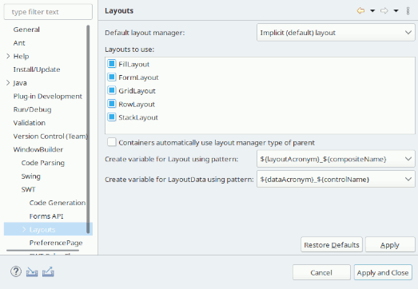

|  This page is used to control various SWT > Layouts options. Default layout managerThis preference controls the default layout manager that SWT Designer uses for any new frame or panel. The default is to use the implicit layout manager already in effect for each container (e.g., BorderLayout for JFrames and FlowLayout for JPanels). Containers automatically use layout manager type of parentThis preference determines whether new panels will use the layout manager of their parent's by default. Create variable for Layout using patternThis preference determines what pattern will be used to generate layout variables. The following styles are supported:
Create variable for LayoutData using patternThis preference determines what pattern will be used to generate layout data variables. The following styles are supported:
|